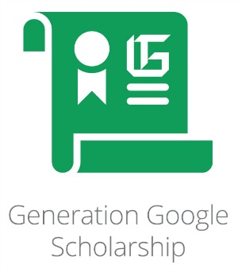

By Anshika Dubey
Hello! I am Anshika Dubey, a Final-Year Computer Science student and the recipient of the Generation Google Scholarship. Generation Google was the first achievement in my career and it paved way for me to get more achievements by providing me the confidence to achieve more and more.
The Generation Google Scholarship – formerly The Women Techmakers Scholars Program–is furthering Dr. Anita Borg’s vision of creating gender equality in the tech industry by encouraging women to excel as active participants and leaders in the field.
I got to know about the scholarship program through LinkedIn. Whatever I am today, is because of this scholarship program and the kind of confidence it gives you, it makes you feel proud that you were selected amongst the top women in the ASIA-PACIFIC region. It was a wholesome learning experience and a journey filled with excitement. The whole application process, the thrill of getting the interview call, and then finally meeting the other scholars during the retreat is exceptional.
Talking about the application process, it is pretty simple wherein the applicants are supposed to fill in general details about themselves along with submitting their Resume/CV and essay answers. Essays are the most efficient way of expressing your thought process and helps a lot in understanding a candidate's perspective.
The questions are designed to extract your leadership skills, community engagement, interest in technology, and contribution to the underrepresented community.
Some tips that I always give my juniors for the essay answers are –In addition, your resume should highlight exceptional technical skills, leadership skills, and community engagement. For clearing the coding test, the candidates should be good at solving Data Structures and Algorithm problems.
The last stage of the selection process is the Interview round, where you interact with a googler. Confidence is the key deciding factor here, and the questions mostly revolve around your resume and essays. This is an HR round and not technical.
Some of the key tips for clearing this interview are -Being a Generation Google scholar is a very big achievement, and it requires efforts from the candidates from their first year itself, like building projects, being involved in community activities, etc. so getting to know about this at an early stage is essential.
This was the advice that I have been telling my juniors and I can proudly say that it helped them, with the feedback that I got. I hope that all those reading this blog finds it inspiring and the tips help them become a scholar themselves.